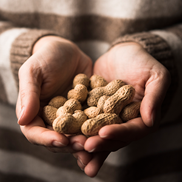

- 


SHATAPATHRAM EXIM OPC PVT LTD bertujuan untuk menjadi pemimpin dalam impor-ekspor dengan merespons kebutuhan pelanggan dengan cepat dan mematuhi standar industri.
Flat No.3 , "Sastha", Building No.58 , Old No.48 , 3rd Main Road , Kusturibai Nagar , Adyar , Chennai - 600020, Tamil Nadu, India
4797-0645
sales@shatapathram.com